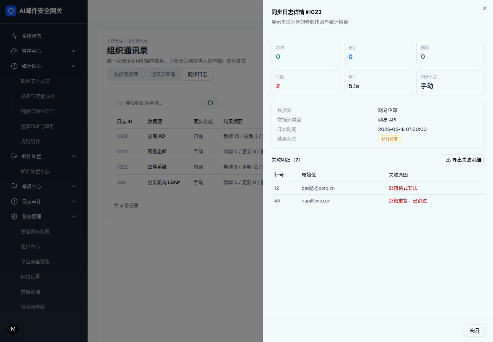

| 所属组件 | 2.4 同步日志 Tab |
| 触发路径 | 行内「详情」（实测 #1023 部分异常）→ 右侧 Sheet 抽屉（sm:max-w-2xl，672px） |
预览可操作：「导出失败明细」→ toast「已导出失败明细 CSV」；「关闭」/ X 关闭。失败明细表为条件渲染：仅 failDetails 非空时出现（成功日志无此区块）。

| 分区 | 规格（浏览器实测） |
|---|---|
| 头部 | 标题「同步日志详情 #1023」（动态 ID）+ 描述「展示本次同步的参数快照与统计结果」 |
| 统计卡 | 3 列网格 6 张：新增(绿)/更新(蓝)/删除(灰)/失败(红)/耗时/同步方式 —— 数字 text-lg font-semibold |
| 参数快照 | 两列键值：数据源 / 数据源类型（SYNC_TYPE_SHORT）/ 开始时间 / 结果状态（徽章） |
| 失败明细 | 标题「失败明细（N）」+「导出失败明细」outline 按钮（Download 图标）；表：行号（0 或缺省显示「-」）/ 原始值 / 失败原因（红字）。实测两行：12 · bad@@corp.cn · 邮箱格式非法；45 · dup@corp.cn · 邮箱重复，已跳过 |
| 底部 | 「关闭」outline 按钮 |
| 比对项 | demo 实际 DOM | 嵌入的 HTML | 是否一致 |
|---|---|---|---|
| 根节点 | [role=dialog][data-slot=sheet-content]（sm:max-w-2xl） | 同（l1 快照） | 一致 |
| 节点数 | 65 | 65 | 一致 |
| 统计卡数 | 6 | 6 | 一致 |
| 失败明细行数 | 2（仅 failDetails 非空时渲染该区块） | 2 | 一致 |
| 行号 0 显示 | 「-」（连接超时整体失败的 #1021 行号为 0） | 同（该规则来自源码 f.line || '-'） | 一致 |